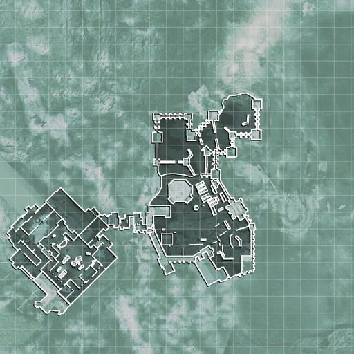

Misiones

Operación Apagon
Poco despues de que Al-Asad ejecutara al presidente Al-Fulani se autoriza una intervencion de Estados Unidos en el pais de Oriente Medio, mientras que los SAS se concentran en rescatar a Nikolai, el informante de los SAS en el campo ultranacionalista, quien informo sobre el carguero en el Estrecho de Bering que llevaba un artefacto nuclear. Gaz, Price y Soap van al Cáucaso, avanzan con la unidad 22 por la noche atacando silenciosamente algunos puestos de guardia hasta encontrarse con un ruso patriota y sus soldados, el Sargento Kamarov, quien proporciona apoyo a los SAS debido a que Kamarov le debia un favor a Price. Los hombres de Kamarov asaltan el pueblo y Kamarov, Soap, Gaz y Price proporcionan apoyo de francotirador. Al ver que Kamarov se concentraba mas en eliminar a los ultranacionalistas, Gaz logra hacerle revelar el paradero de Nikolai, la casa al extremo sureste del pueblo. Al llegar alli, Gaz corta la electricidad y price y Soap entran con visión nocturna y eliminan a todos enemigos. Price encuentra a Nikolai en el piso superior y todos van al helicoptero. En el helicoptero, Nikolai pregunta si los americanos ya habían atacado a Al-Asad y Price lo niega. Nikolai dice que los americanos cometen un error y que jamas atraparian a Al-Asad con vida.

Mas misiones hechas
Operación: "El Gulag"
Descubierto el paradero del rehén, descubren que está en un castillo medieval que se usa de gulag al este de Rusia, cerca de Petropavlovsk-Kamchatski. El pelotón de MacTavish se infiltra en el gulag para rescatar al Prisionero Nº627. Dentro, descubren que el misterioso prisionero es nada más y nada menos que el capitán Price. Todo el pelotón lucha por llegar a la superficie pues la aviación se dispone a bombardear el gulag, no sin complicaciones, todos logran salir de allí en helicóptero mientras a sus pies el gulag es destruido.
Operación: "Fortaleza"
Durante la escena de carga, Price contacta a MacMillan, informando a este último sobre la muerte de Soap. La misión comienza con Yuri y Price lanzándose en paracaídas a los terrenos del castillo. Cuando se acercan al suelo, Price elimina a dos guardias con su pistola. La pareja cruza el espacio abierto y se esconde detrás de una vieja pared mientras pasa una patrulla. Los dos luego caen a un patio con numerosos vehículos en él. Arrastrándose debajo de los vehículos, Arrastrándose debajo de eso, al estudiar las cámaras, Price decide ir directamente al centro de comando. Usando las huellas digitales de un guardia muerto, abre la puerta. La pareja limpia una mazmorra oscura, usando visión nocturna para matar a los guardias. Los guardias se vuelven sabios con esto y lanzan bengalas para ayudar a detectar a los atacantes.
Yuri y Price son arrojados a un combate feroz y limpian un piso lleno de enemigos. Después de cruzar el desvencijado puente, rompen una pared en un corredor, cronometrando con el trueno afuera para no alertar a nadie adentro. El agujero en la pared revela un pasaje estrecho y vertical con vigas de madera destartaladas. Yuri y Price suben hasta encontrar un pequeño respiradero y escuchan una conversación entre Alexi y Makarov, que revela que el presidente ruso está siendo interrogado por los códigos de lanzamiento nuclear y que los hombres de Makarov se dirigen a Berlín para capturar a su hija.
Un guardia alerta a Alexi de que la base ha sido violada, y Price lanza una granada a través del respiradero para comprar el par en algún momento. Los dos se deslizan por el pasillo y aterrizan en una cocina donde hay más hostiles. Price contacta a Nikolai sobre la ubicación de la hija y él y Yuri se mueven afuera donde enfrentan más resistencia enemiga. Al regresar al interior, los dos limpian una oficina y atraviesan las puertas de un patio donde están estacionados más hostiles. Entran rápidamente y terminan en una plataforma con vistas al puente. El jeep recibe más fuego de los vehículos enemigos y el motor está muy dañado, lo que lo arroja por un precipicio. Sin embargo, ambos tienen paracaídas de repuesto y se deslizan con seguridad hacia el suelo cuando Price le indica a Nikolai que los recoja.